Database & SQL
Các câu hỏi SQL hay gặp: UNION, VIEW, CTE, stored procedure, transaction, trigger, index; cùng phần Prisma và lựa chọn giữa cursor và offset pagination.
UNION (UNION ALL)
- Dùng để kết hợp kết quả của nhiều truy vấn SELECT.
- Các bảng không cần có quan hệ với nhau.
- Chỉ lấy các dòng duy nhất (giống DISTINCT). Nếu muốn giữ trùng lặp, dùng UNION ALL.
- Yêu cầu số cột và kiểu dữ liệu trong các SELECT phải giống nhau.
- Ex:
SELECT name, email FROM customers
UNION
SELECT name, email FROM employees;SELECT INTO
- Dùng để tạo 1 bảng mới và sao chép dữ liệu từ 1 bảng hiện có vào bảng mới này
- Cấu trúc bảng mới sẽ giống bảng gốc, nhưng không có ràng buộc (
PRIMARY KEY,FOREIGN KEY,INDEX...). - Ex:
SELECT * INTO CloneProduct
FROM Product
WHERE 1=1VIEW
Là một bảng ảo hiển thị dữ liệu động từ truy vấn.
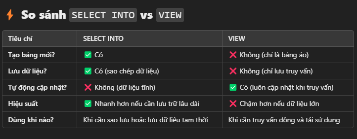
Common table expression
- CTE là một truy vấn tạm thời được định nghĩa bằng WITH, giúp câu SQL dễ đọc hơn và có thể tái sử dụng trong cùng một truy vấn.
- Ex:
WITH HighRevenueOrders AS (
SELECT order_id, customer_id, total_amount
FROM orders
WHERE total_amount > 1000
)
SELECT c.name, hro.total_amount
FROM customers as c
JOIN HighRevenueOrders as hro ON c.customer_id = hro.customer_id;STORE PROCEDURE, FUNCTION
Là tập hợp 1 hay nhiều câu lệnh T-SQL thành 1 nhóm để hoàn thành 1 tác vụ
Feature
Store procedure
Function
Trả về giá trị
Không hoặc có (thông qua OUTPUT nếu có)
Luôn phải trả về 1 giá trị
Có thể dùng trong SELECT / WHERE / HAVING
không
có
Thực hiện INSERT, UPDATE, DELETE?
Có
không
Có thể bắt đầu TRANSACTION?Có
không
Có thể dùng try-catch
Có
không
- Ex :
- Store procedure
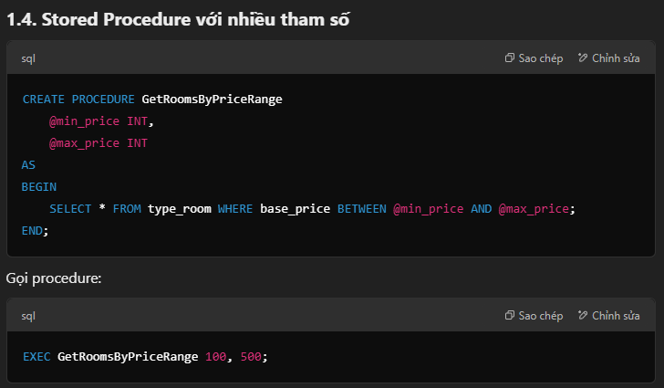
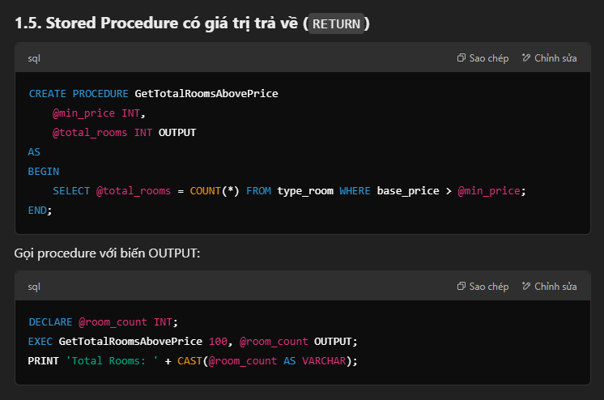
function
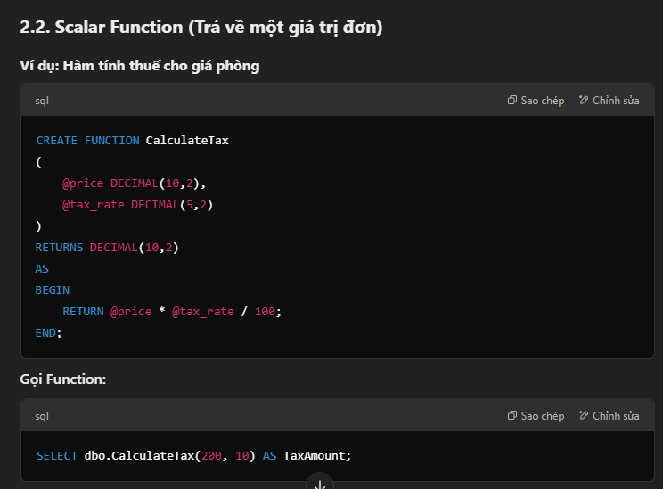
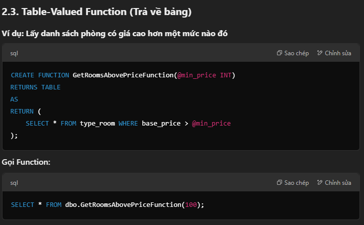
Transaction trong SQL
- là tiến trình thực hiện một nhóm các câu lệnh SQL. Các câu lệnh này được thực thi một cách tuần tự và độc lập.
- được áp dụng cho các lệnh thao tác dữ liệu : INSERT, UPDATE, DELETE
- Gồm 2 trạng thái chính là : COMMIT và ROLLBACK (chỉ 1 fail thì all back về ban đầu như chưa có gì happen)
Trigger
- Là 1 đoạn thủ tục SQL đc thực thi tự động khi 1 sự kiện xảy ra trên 1 table hoặc view
- Sự kiện ở đây là DDL , DML (SELECT , INSERT , …)
- Các loại Trigger phổ biến:
- Trigger trước khi (BEFORE): Thực hiện trước khi sự kiện xảy ra.
- Trigger sau khi (AFTER): Thực hiện sau khi sự kiện xảy ra.
- Trigger thay vì (INSTEAD OF): Thay thế cho một câu lệnh SQL cụ thể (thường dùng với view).
Index
- là một cấu trúc dữ liệu được tạo trên một hoặc nhiều cột của bảng để tăng tốc độ truy vấn dữ liệu
- giống như mục lục trong một cuốn sách giúp bạn tìm kiếm thông tin nhanh chóng hơn và ko cần quét toàn bộ sách
- cải thiện tốc độ các câu query có điều kiện(where, join, group by, order by) nhưng có thể làm chậm quá trình INSERT và UPDATE
- Tại sao không đặt index cho tất cả cột:
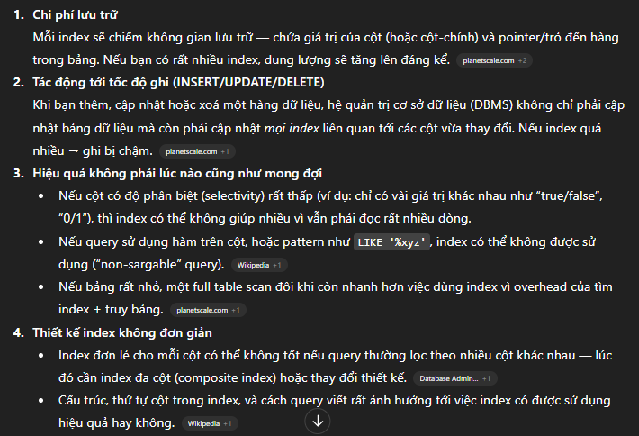
NestJS
some và every trong quan hệ 1-n ở where prisma
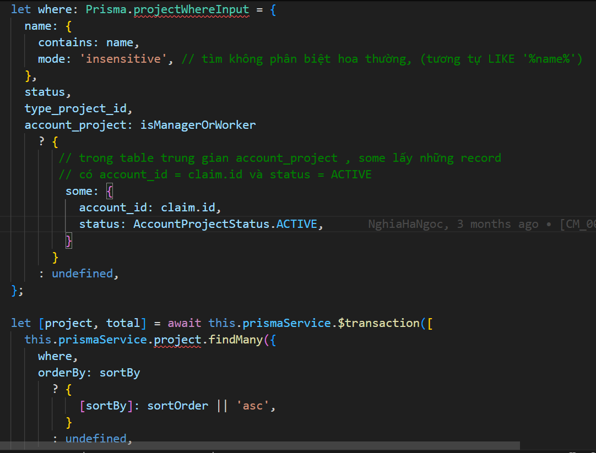
Nếu dùng every thì :
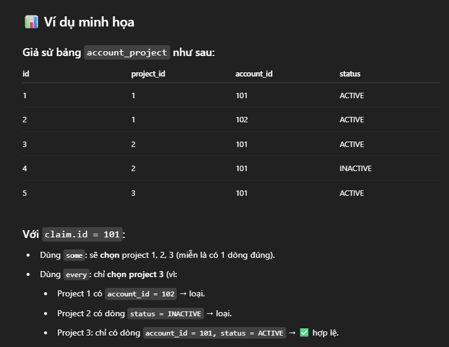
Dịch sang truy vấn thuần:
some:
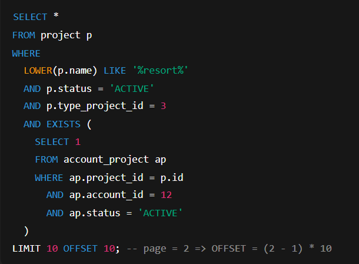
every:
NOT EXISTS (
SELECT 1
FROM account_project ap
WHERE ap.project_id = p.id
AND (ap.account_id != 12 OR ap.status != 'ACTIVE')
)Tóm lại:EXISTS (subquery)
- Trả về FALSE nếu subquery không có bản ghi nào.
- Trả về TRUE nếu subquery có ít nhất 1 bản ghi.
NOT EXISTS (subquery)- Trả về TRUE nếu subquery không có bản ghi nào.
- Trả về FALSE nếu subquery có ít nhất 1 bản ghi.
schema.prisma file
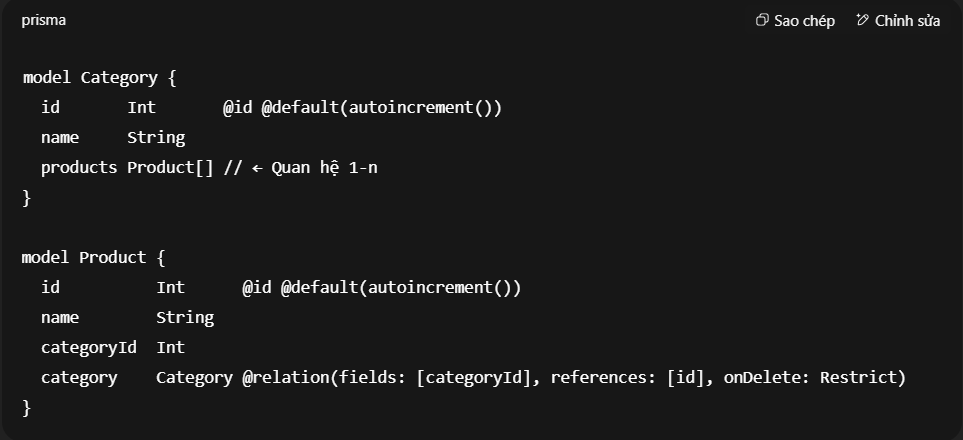
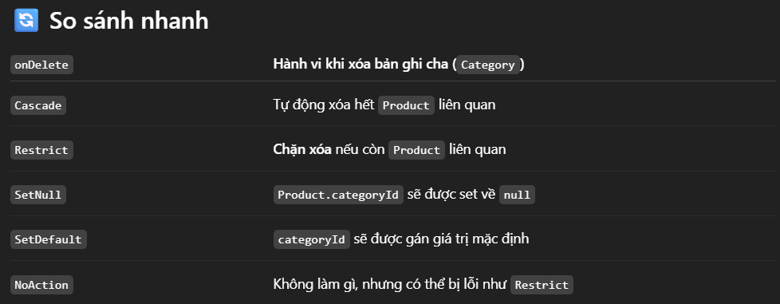
ACID
là bộ 4 tiêu chuẩn vàng (Atomicity, Consistency, Isolation, Durability) đảm bảo mọi giao dịch (transaction) được xử lý an toàn và chính xác. Nếu một phần giao dịch thất bại, toàn bộ hệ thống sẽ tự động khôi phục lại trạng thái ban đầu.
4 thuộc tính cốt lõi bao gồm:
- Atomicity (Tính nguyên tử): Hoạt động theo quy tắc "Tất cả hoặc không". Nếu một bước trong giao dịch bị lỗi, toàn bộ giao dịch sẽ bị hủy bỏ và phục hồi (rollback), không có thay đổi nào được lưu lại.
- Consistency (Tính nhất quán): Đảm bảo dữ liệu luôn tuân thủ các quy tắc, ràng buộc và cấu trúc của hệ thống trước và sau khi giao dịch hoàn tất (commit).
- Isolation (Tính cô lập): Các giao dịch thực hiện cùng lúc không được làm ảnh hưởng đến nhau. Mọi thay đổi từ một giao dịch đang chạy sẽ bị ẩn đối với các giao dịch khác cho đến khi hoàn tất.
- Durability (Tính bền vững): Khi một giao dịch được xác nhận (commit) thành công, dữ liệu sẽ được lưu vĩnh viễn trên ổ cứng và không bị mất ngay cả khi hệ thống sập hoặc mất điện.
giữa cursor và pagination , tại sao lại ưu tiên dùng cursor hơn
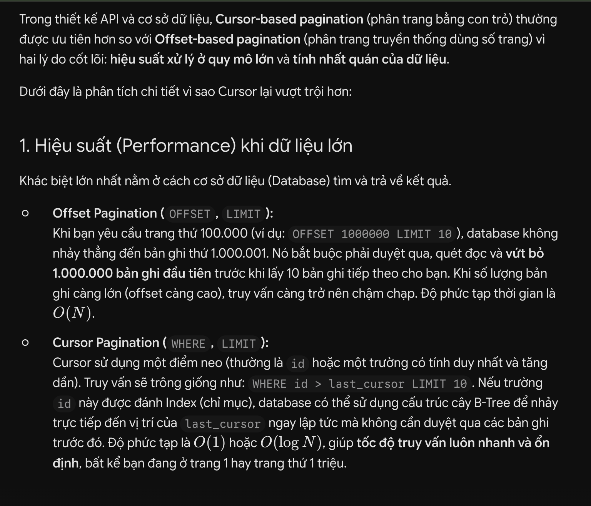
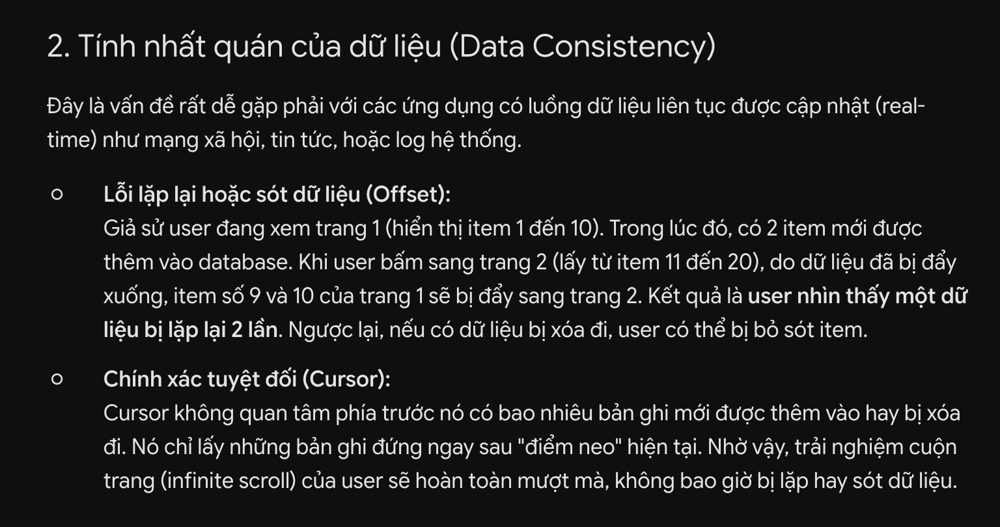